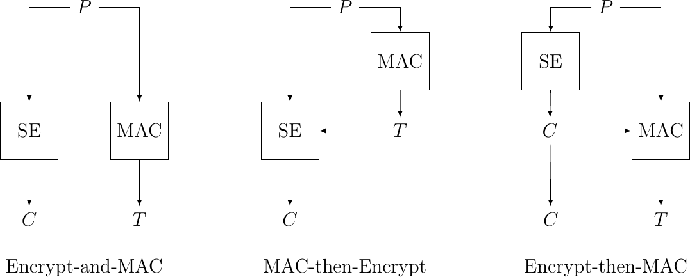

Authenticated encryption#
With growing dependency on information technology and more at stake, the security aspect has become more vital than ever. Within this context acts authenticated encryption(AE) as a shared-key based transform whose goal is to provide secrecy, Integrity and authenticity of the encapsulated data 1. AE combines traditional Symmetric Encryption (SE) with a Message Authentication Code (MAC) in different orders 2. This article introduces the different combinations of authenticated encryption and their applications.
What is an AE?#
Nowadays, the traditional approach to secure communications is to establish a “secure channel” between two endpoints and then exchange encrypted data 3. Typically, this is done by initiating a secure key-exchange (or multiple keys), which will be later used to encrypt/decrypt the exchanged data. This approach is used in many protocols such as: Secure Sockets Layer (SSL: predecessor of TLS), Internet Protocol security (IPsec), Secure Shell (SSH) etc. 3. An authenticated encryption is composed by two main blocks; Message Authentication Code (MAC) and a Symmetric Encryption (SE). The MAC is a piece of information (often called a tag) generated based on the data at hand and is transmitted throughout the channel within the sent package. The tag is then used in the receiving end to verify the data integrity and the authenticity of its source. SE on the other hand refers to an encryption algorithms using the same cryptographic key for both encryption and decryption. Encryption transforms a plain-text into unreadable text (Cipher-text), to ensure the privacy of the interactions. The authenticated encryption combination of MAC and SE provides Integrity and Authenticity using the MAC and Privacy through SE.
The different combinations resulting in AE#
There are various approaches to authenticated encryption that differs essentially in the way the MAC and the SE are combined. To describe these three methods effectively, we consider P as Plain-text, C as Cipher-text, SE is a symmetric encryption function, K stands for Key, MAC is a message authentication code, T is the generated tag and || denotes concatenation. This results in the following three different approaches:
MAC and Encrypt (M&E): In this approach the sender computes a MAC of the P, encrypts the P, and then appends the MAC to the C 4. This is how SSH works and can be described by: \(C = E_{k1}(P) || MAC_{k2}(P)\)
MAC-then-Encrypt (MtE): Here the sender computes a MAC of the P, then encrypts both the P and the MAC 4. This is approximately how SSL works. \(C = E_{k1}(P || MAC_{k2}(P))\)
Encrypt-then-MAC (EtM): It consists of encrypting the P first and then appending a MAC of the result 4. This scheme is used in IPsec and can be summed by: \(C = E_{k1}(P) || MAC_{k2}(E_{k1}(P))\)

Figure 3: SE and MAC combinations
AE flaws and limitations#
Although SE and the MAC can be independently secure, their combination is not necessarily unbreakable. For example, when using MtE, one needs to remove the padding that was originally introduced during the encryption process before decrypting 4. This un-padding before decryption reveals a huge vulnerability since the receiver throws two distinct errors with different delays:
Padding error if the padding is incorrect.
Decryption error in case of faulty decryption.
Knowing that the receiver always checks the last byte first to process padding, an attacker can build a cipher-text to be decrypted arbitrarily by modifying the last byte of the second to last cipher-text block 4. When processing the message, the receiver has two possible crypto-related errors: a padding error, or a MAC error 4. This revelation of the error can result in the following scenario:
The attacker first intercepts a cipher-text of 2 blocks using sniffing for instance. Knowing that CBC-decryption uses the previous block as an Initialization Vector (IV) for the decryption process of the current cipher-text, the decryption process can be summarized in the following formula, where D stands for decryption, c is the 2nd block of the cipher-text and p is its associated plain-text block: \(D(c) \oplus IV = p\)
With the help of this combination of MAC and CBC the attacker first sends to the receiver a packet where the L byte of the IV is altered, if a success message is received, then he changes the L-1 byte and so on until he receives an error at L-6 for example. This use of a package to interact with the AE is called a padding oracle and would enable the attacker to determine the used padding and the length of the data. The attacker then seeks to introduce a higher padding by changing the IV values, while changing the second byte. Once he doesn’t receive a padding error, using some basic math the value of the plain-text second byte is determined as in figure 5. Using these steps, the attacker can determine a full plain-text block that he can later use alongside its associated cipher-text block to determine the key. Once the key is known, the whole interaction becomes open to the attacker. This attack is called a Padding oracle attack or the Vaudenay attack 4.
At first glance this may seem avoidable by simply not revealing the type of error, whether it is a padding or MAC-error (note that some error feedback is practical to have, especially in web-services). However, the threat is still unavoidable since the attacker can analyze the time taken to respond. This helps the attacker to determine, whether a padding error or a MAC-error was detected (A MAC error obviously takes longer since the receiver must first remove the padding, decrypt and then verify the MAC). This is known as a timing attack. These type of attacks are part of chosen cipher-text attacks. M&E is also vulnerable to the same type of attacks, therefore Encrypt-then-MAC is the best practice of AE.
Conclusion#
To summarize, AE is a combination of SE and MAC that ensures integrity, authenticity and secrecy. Depending on the combination order of SE and MAC, we have 3 types of AE. Out of those, Encrypt-then-MAC is the recommended approach to authenticated encryption. However, MAC-then-encrypt is still a safe and fast approach under certain tight conditions (the case of SSL for instance).
References and Further readings#
- 1
C. Nampremere M. Bellare. Authenticated encryption: relations among notions and analysis of the generic composition paradigm. 2007.
- 2
P. Rogaway C. Namprempre and T. Shrimpton. Reconsidering generic composition. 2014.
- 3(1,2)
H. Krawczyk. The order of encryption and authentication for protecting communications (or: how secure is ssl?). 2001.
- 4(1,2,3,4,5,6,7)
M. Marlinspike. blog: The Cryptographic Doom Principle,. https://moxie.org/blog/the-cryptographic-doom-principle/, Dec.1, 2017, 05.01.2018.